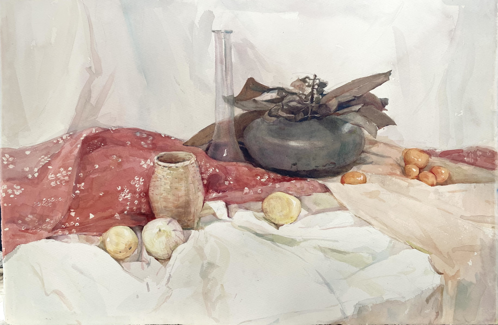
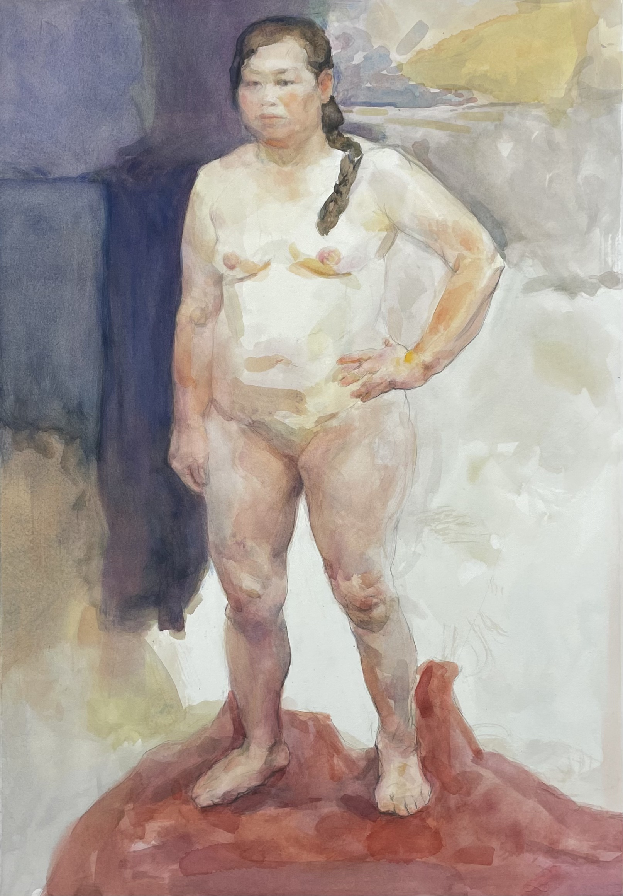
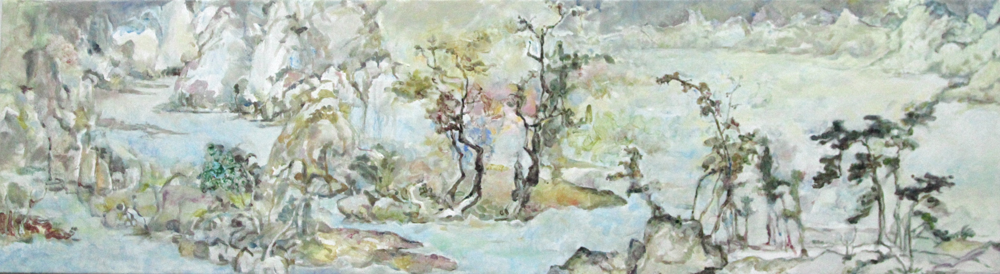
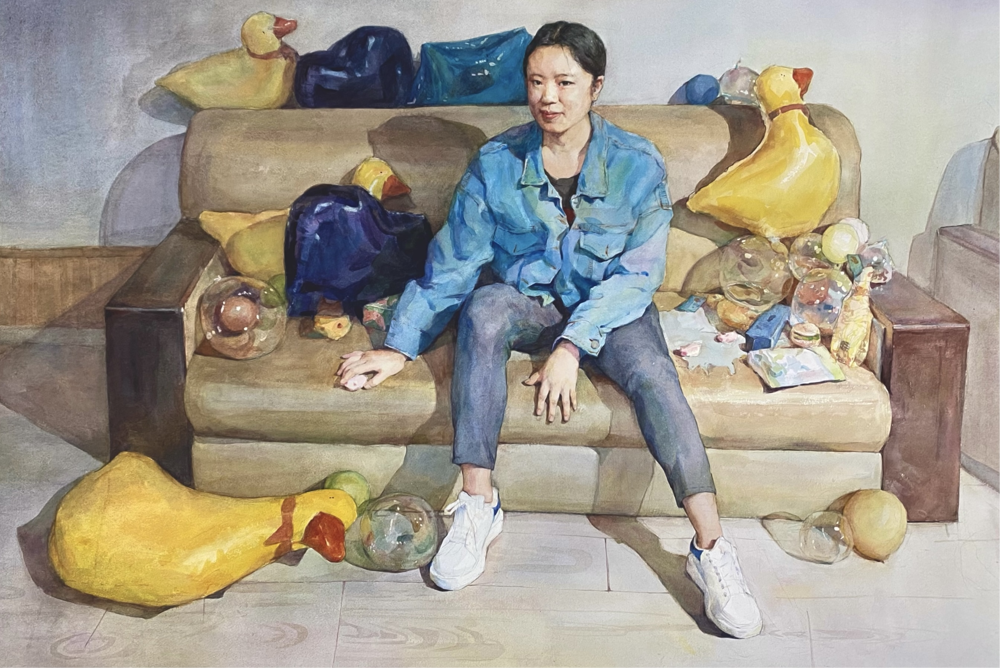

Youcy
Huang
黄鈺茜 — Artist, Writer & Researcher
Research-based painter completing an MFA at the China Academy of Art after fifteen years of practice. My work moves across painting, fiction, poetry, and art theory — each medium a different entry into the same inquiry: how meaning emerges, or fails to emerge, under contemporary conditions.
My practice developed alongside my thinking — from early realism through modern and postmodern philosophy to an ongoing investigation of materiality and embodiment. I am the author of the Guaren (瓜人) project and am currently preparing to enter Digital Humanities at TU Dresden — not to leave art behind, but to extend a body-based practice into computational methods and digital cultural heritage.
Enter the Catalogue

Paintings
Catalogue of Works
Fifteen years of practice across six periods — early realism, Cézanne studies, the Heidegger turn, Authenticity portraits, Chinese-Western landscape synthesis, and MFA graduation work. Period introductions, individual work annotations, adjustable thumbnail grid.
Browse catalogue →
Writing
Essays, Fiction & Poetry
Critical essays on art theory and philosophy — the Guaren project, ganxing and material temporality, youth subjectivity in contemporary China. Fiction and poetry on family, memory, and unspoken inheritances. AI-assisted search across all documents.
Browse archive →
Digital
Learning Frameworks & Tools
DH curriculum map tracking the transition from fine arts into Digital Humanities. German language study system for philosophy and art history reading. Experimental web tools for scroll viewing, painting annotation, and AI prompt documentation.
Explore →
Projects & Design
Public Art, Installation & Graphic Work
Qingdao public art installations. Stuttgart participatory sculpture. Truck Seal community art project. Graphic and commercial design portfolio. The Anonymous Art Company framework.
View projects →